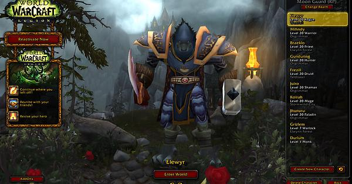
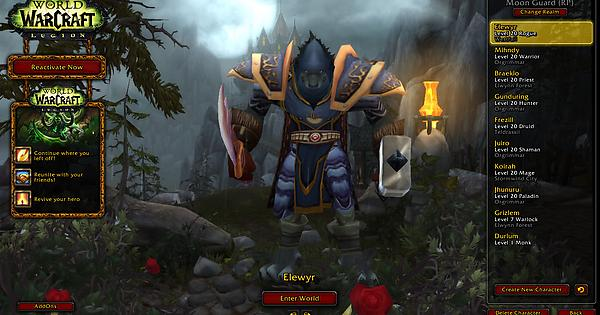

World of Warcraft (WoW) is a massively multiplayer online role-playing game (MMORPG) released in 2004 by Blizzard Entertainment. Set in the Warcraft fantasy universe, World of Warcraft takes place within the world of Azeroth, approximately four years after the events of the previous game in the series, Warcraft III: The Frozen Throne. The game was announced in 2001, and was released for the 10th anniversary of the Warcraft franchise on November 23, 2004. Since launch, World of Warcraft has had eight major expansion packs: The Burning Crusade (2007), Wrath of the Lich King (2008), Cataclysm (2010), Mists of Pandaria (2012), Warlords of Draenor (2014), Legion (2016), Battle for Azeroth (2018), and Shadowlands (2020).
Similar to other MMORPGs, the game allows players to create a character avatar and explore an open game world in third- or first-person view, exploring the landscape, fighting various monsters, completing quests, and interacting with non-player characters (NPCs) or other players. The game encourages players to work together to complete quests, enter dungeons and engage in player versus player (PvP) combat, however the game can also be played solo without interacting with others. The game primarily focuses on character progression, in which players earn experience points to level up their character to make them more powerful and buy and sell items using in-game currency to acquire better equipment, among other game systems.
World of Warcraft was a major critical and commercial success upon its original release in 2004 and quickly became the most popular MMORPG of all-time, reaching a peak of 12 million subscribers in 2010. The game had over one hundred million registered accounts by 2014 and by 2017, had grossed over $9.23 billion in revenue, making it one of the highest-grossing video game franchises of all time. The game has been cited by gaming journalists as the greatest MMORPG of all-time and one of the greatest video games of all time and has also been noted for its long lifespan, continuing to receive developer support and expansion packs over 15 years since its initial release. In 2019, a vanilla version of the game titled World of Warcraft Classic was launched.
 

As with other MMORPGs, players control a character avatar within a game world in third- or first-person view, exploring the landscape, fighting various monsters, completing quests, and interacting with non-player characters (NPCs) or other players. Also similar to other MMORPGs, World of Warcraft requires the player to pay for a subscription by using a credit or debit card, using prepaid Blizzard game cards or using a WoW Token purchased in-game. Players without a subscription may use a trial account that lets the player character reach up to level 20 but has many features locked.
To enter the game, the player must select a server, referred to in-game as a 'realm'. Each realm acts as an individual copy of the game world and falls into one of two categories. Available realms types are:
Normal – a regular type realm where the gameplay is mostly focused on defeating monsters and completing quests, with player-versus-player fights and any roleplay are optional.
RP (roleplay) – which works the same way as a "Normal" realm, but focuses on players roleplaying in-character.
Before the introduction of World of Warcraft's seventh expansion "Battle for Azeroth", both "Normal" and "RP" servers were each divided into two separate categories: PvE servers and PvP servers. This has since been removed after the implementation of the "War Mode" option, which allows any player (of level 20 and higher) on any server to determine whether they want to actively participate in PvP combat or not, by enabling War Mode in two of the game's capital cities.
Realms are also categorized by language, with in-game support in the language available.
Players can make new characters on all realms within the region, and it is also possible to move already established characters between realms for a fee.To create a new character, in keeping with the storyline of previous Warcraft games, players must choose between the opposing factions of the Alliance or the Horde; Pandaren, which were added in Mists of Pandaria, do not commit to a faction until after the starting zone is completed. Characters from the opposing factions can perform rudimentary communication (most often just "emotes"), but only members of the same faction can speak, mail, group and join guilds. The player selects the new character's race, such as orcs or trolls for the Horde, or humans or dwarves for the Alliance. Players must select the class for the character, with choices such as mages, warriors, and priests available. Most classes are limited to particular races.
As characters become more developed, they gain various talents and skills, requiring the player to further define the abilities of that character. Characters can choose two primary professions that can focus on producing items, such as tailoring, blacksmithing or jewelcrafting or on gathering from resource nodes, such as skinning or mining. Characters can learn all three secondary skills: archeology, cooking, and fishing.
Much of World of Warcraft play involves the completion of quests. These quests are usually available from NPCs. Quests usually reward the player with some combination of experience points, items, and in-game money. Quests allow characters to gain access to new skills and abilities, as well as the ability to explore new areas. It is through quests that much of the game's story is told, both through the quest's text and through scripted actions. Quests commonly involve killing a number of creatures, gathering a certain number of resources, finding a difficult to locate object, speaking to various NPCs, visiting specific locations, interacting with objects in the world, or delivering an item from one place to another to acquire experience and treasures.
While a character can be played on its own, players can group with others to tackle more challenging content. Most end-game challenges are designed in such a way that they can only be overcome while in a group. In this way, character classes are used in specific roles within a group. World of Warcraft uses a "rested bonus" system, increasing the rate that a character can gain experience points after the player has spent time away from the game. When a character dies, it becomes a wisp for Night Elf characters—at a nearby graveyard. Characters can be resurrected by other characters that have the ability or can self-resurrect by moving from the graveyard to the place where they died. If a character is past level ten and they resurrect at a graveyard, the items equipped by the character degrade, requiring in-game money and a specialist NPC to repair them. Items that have degraded heavily become unusable until they are repaired. If the location of the character's body is unreachable, they can use a special "spirit healer" to resurrect at the graveyard. When the spirit healer revives a character, items equipped by the character at that time are further degraded, and the character is significantly weakened by what is in-game called "resurrection sickness" for up to ten minutes, depending on the character's level.